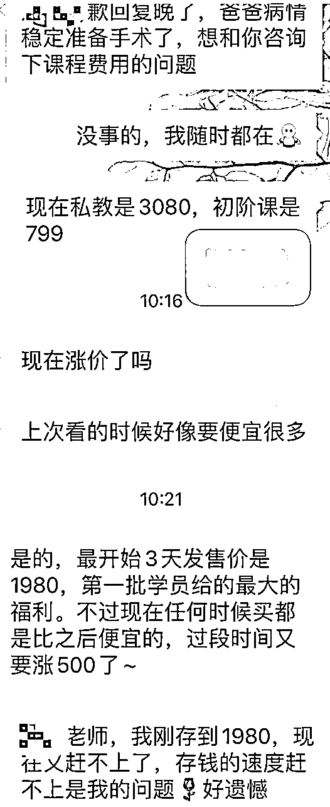
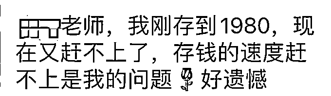

来源：https://oee5lr7gsk.feishu.cn/docx/QQTVdR4Tno61gsxfpk0cnly0nEe
全文 4,644 字，大约需要 10分钟 时间阅读
我想，课程涨价后，意向用户希望以原价购买，这是一个很『常见』的场景。
尤其涨价后，过去关注的客户来询问，
却以一个『才刚涨价不久，能不能给我原本的价格』当成杀价的理由。
这则文章，是一个专题内容，也是当我碰到这案例时，会选择的实际解法，
如何能既有机会不流失客户、又能让客户不买也不会对你有太大的反感。
希望这篇主题，对刚好也碰到相同场景的你，能有帮助。
这张对话，是在我的一个聊天实战群里面，一位学员的提问。
对话大概的背景是这样子：
学员的客户，因为产品涨价，发现预算不够。
学员想留住客户，所以来提问，如何更好地给客户回复
详细对话如下图：

我的回复方式，开头一定会先关注对方，
因为对方一开始有提到爸爸的病情，所以我会特别问一下，
这是对对方的「关注」和「尊重」，也是一种温暖关系。
温暖关系之后，再跟对方说正事。
爸爸的状况一切都顺利吗？
谢谢你特别关注，一开工就来咨询课程，
挺抱歉的，课程年后就涨价，
我也没特别通知每个关注课程的人，
价格估计没法优惠，
但我有一个小建议，要不你听听看？
（这里要注意：得等他回复『好』，才继续往下说）
我觉得对于所有学习量力而为，是一个很重要的思维，
你可以先报名初阶课，因为交付也需要一段时间，
等初阶课上完，如果你觉得我真的挺不错，
到时候再升级私教课，
过程中刚好也能把剩下的钱存好，你看这样如何。
这方案有个好处，
未来若是私教课涨价，你依旧付3080这个费用，
等于能上到初阶课，又能锁定名额。
小备注：
这个回复方式有个前提，
假设你的学生报名初阶课之后，又升级私教课只需要补差价，
我是以这个大前提给出回复的。
但如果你的体系，就没有补差价这一说，
升级就是全价，那这个回复就不太适合你。
然后除了第一种方式，
还有第二个方案可以参考，我会这样说：
我一直认为愿意成长的人，
当下的收入状况，不应该是阻碍成长的原因。
我其实有提供分期服务，
但有个前提必须得付过我的某一项课程，
也就是如果你报名了初阶课，那私教课程我能让你分期。
但只限定分（两期或者三期），
我一样收你1980，
但两个月内你得把剩余的钱补上，
可以理解成，你先报名我的初阶课程，
然后才能获得分期资格。
第二个方案有个好处，因为客户清晰地跟你说，他有1980的预算。
销售其实有个很重要的逻辑，要抓清楚客户有多少预算是可『支出』的，
就一个业务的角度，预算都清晰，结果钱没收进来，这太可惜了。
分期的过程，其实同样可以评估，这个人值不值得信任，
因为这是一个叠加信任的过程。
只要多一个附注：
只要分期的时间到，没付钱，
那服务会暂时终止。
一开始把规定说清楚就好。

因为这句话代表，对于讲师的信任感初期是很足够的，
初步评估之下，我认为这位朋友的意愿度是有达标的。
大原则就是
刚好有这个案例，我顺便做一点延伸：
就我自己的小源说说体系为例，
最初阶的课程，又或者是第一次对我付费的人、甚至是转介绍，
基本上我不会给任何优惠，一定是原价购买。
因为我跟这个人过去没有交集，
没交集就代表信任感一定不太足，也不确定是否认同我这个人的价值观。
当然第一次对我付费的人，肯定都是300以内的消费（一对一咨询除外），
除了刚刚的没信任感之外，我的想法是:
这种100～300的费用给优惠，
坦白说，也优惠不了多少钱，打个折，了不起省个几十块，其实没太多意义。
与其这样，我还不如把这个优惠力度给到老生身上，也就是愿意第二次购买的人。
🌰举个例子：
初阶课299元，进阶课1500元。
初阶课我不给任何优惠，
但如果上完初阶，愿意报名进阶课，
我就给一张200元的折价券，
这就等于初阶课程，只要99块，几乎是三折的价格。
甚至我还能直接给299元的优惠券，
等于你愿意来进阶课，初阶课我就当成礼物送你。
好处就是，「筛选」以及「把优惠给老人」。
对于老生（只要购买过任意课程，都是我定义的老生），
假设四位数的课程，我都能接受学员分期。
我会让对方自己做一个分期计划发给我，这阶段就是一种筛选了，
看这个人除了有意愿之外，思维能不能清晰。
分期计划有了之后，等他付完了首付，
我就会给出完整交付，不会因为钱还没全额到，我的交付就出现打折。
给首付之前我都会特别跟他说：
时间到你记得准时给我就好，
假设真的遇到状况，
记得跟我说一声，
提前说都没问题。
我会说的很清楚，每月的时间到了，我不会提醒你记得要付钱，
记得就记得，真不记得那这人我就当评估错误，
目前为止我没有哪一笔分期是拖延或者是没给的，一笔都没有。
这个目的，是能让对方感觉到我给出一份『完整的信任』，
过程中可以筛选出很多很多非常优质的学员。
因为
筛选同频的人，是我认为最困难、也最花时间的事情。
以前做公域，可以大量的对外卖课，
一个课程上完，我就能继续往公域卖，反正全中国14亿人口，还怕没新人可以卖吗！
但我一直都清楚自己擅长的点——经营私域。
这是我未来更想做的事情。
如果真的谈到私域，那我要做的就是
透过已经购买的学生，从中筛选更符合我价值观的人，进行更深度的经营。
也因为此，我认为
当然，这个筛选跟评估的方式，仅属于我个人的观点，不一定适用于所有人。
回复的建议给到学员之后，学员有跟客户做进一步的沟通，
下面是对话内容的补充
提问者：
我来反馈下，今天上午跟大家请教的谈单案例，借用了根源老师的建议，第一次有人评价我说话如沐春风哈哈哈，虽然没有成交（确实很拮据，负债累累了，我也觉得她不买是对的），但是我觉得留下了一个好印象。
（ 下方为提问者与客户新的聊天记录内容 ）
（提问者用『小明』代称、客户用『小英』代称）
客户：
小明，抱歉回复晚了，爸爸病情稳定准备手术了，想和你咨询下课程费用的问题
提问者：
没事的，我随时都在，现在私教是3080，初阶课是799
客户：
现在涨价了吗？上次看的时候好像要便宜很多
提问者：
是的，最开始3天发售价是1980，第一批学员给的最大的福利。不过现在任何时候买都是比之后便宜的，过段时间又要涨500了~
客户：
小明老师，我刚存到1980，现在又赶不上了，存钱的速度赶不上是我的问题，好遗憾
提问者：
刚刚带娃出门了一下，回复比较慢，不好意思。首先谢谢你特别关注，爸爸病情稳定了就来咨询课程，挺抱歉的，课程涨价了，我也没特别通知每个关注课程的人。价格估计没法优惠，但我有一個小建议，要不你听听看？
客户：
谢谢老师，向您学习，如沐春风，是我佩服的情商。现在的我就是一片废墟，百废待兴，糟糕极了，您是我学习的榜样。
提问者：
课程涨价是必然的，我也看到你学习的意愿很强，而且一开始就关注了我的课程，一直在存钱，感谢这份信任，这是我的荣幸。
你家人的情况，之前我们聊天我也了解到一些，确实手头比较紧张，所以给你开一个特权：
你可以先付 1980 锁定 3080 的价格，我会先按全款课程内容给你上课，这是我的诚意，剩下的1100你需要给我一个时间期限，在这时间内补齐给我就行。
你觉得这个方案可以的话，我们就可以马上开始上课了。
客户：
谢谢小明老师对我的关心照顾，现在手头很紧张，1980的课程也是再三权衡，父亲手术费后期恢复也因为自己前期糟糕的认知，错误的选择负债累累捉襟见肘。
选择这个课程是本命年给自己一个新的开始和爱的鼓励，近来经常有这方面的状况，我发现这也是身体对我的报警。谢谢您，我先睡好觉吃好饭，情绪稳定做好最基本的。
一切都是最好的安排，如果不好，说明还没到最后。
提问者：
如果发生了你刚提到的身体状况，这个问题真的需要重视，我们课程里面确实有针对这块的解决方法。剩下的1100你还是觉得压力很大是吗？
客户：
对不起，确实是的，给您带来负能量了
提问者：
没事的，很高兴你能跟我说这些，非常理解你的处境。我送你一个499的课程，先解决你身体的问题，把自己身体调理好，才能更好的照顾爸爸。
不买课也没关系的，既然认识了，我也会尽自己的能力给一些帮助，领取就可以上课了，课程有不疑问的地方也可以问我。
客户：
谢谢小明老师，很羡慕您现在的状态，是我向往的样子，向您学习，渴望可以和你同频学习和互相帮助那一天早日到来
我是这么回复案例提问者的：
有一个小想法，从你的对话中看到你只给对方『单一选项』。
单一选项就是强迫，但两个或两个以上选项这才是真正的『给建议』
如果，给的建议，都是对方没能力支付的，那这建议还不如不要给，
因为给了他也没法做到，这等于是白说。
也就是，给出『两个选项』有两个先决条件：
所以，假设给建议，我一定会给出两个、甚至是两个以上。
我觉得有钱人的钱，跟钱少人的钱其实都是钱，这两种钱我都收，只是收的方式会不太一样。
当然，我也同意有钱人的钱，更好赚，也能拿到更多，拿的更轻松。
但是有钱人的钱，我们大概就只能赚到『钱』。
因为，我们在他「弱」的时候，给出一个非常大的帮助，
这份情很容易被记住，这跟投资很像，有些小公司股价便宜，我趁著多买一点，小公司总有机会能变大。
三十年河东、三十年河西
当下看似的小人物难道就不会成长吗？
这一直是我的观念，
所以，如果是我，
这段对话我一定会多给他一个799初阶课的选项，
而不会只是谈高价格的分期方案。
不只在预算内，几百块的开销，对他的现况也不会造成太大的影响，
这时候我还能多一个方式：
你介不介意，
当我的主编帮我整理上课资料。
刚好透过整理资料的过程，
也能多一个方式去筛选人才。
互联网时代，『私域』是个容错率非常低的赛道，
一个小小的过错，都会因为互联网的便捷，快速的被找出来，贴上某种标签。
假设，有这样一个场景：
今天开了一个线下卖衣服的门店，
有个客人走进来摸摸衣服、摸摸裤子、试穿几件大衣，
最终说一声考虑考虑没买，就离开门店。
你会因为顾客的不购买，
就把这个客户永远的拉黑，从此不得进店
过程中就不好好服务
跟别的商家说，这人以后来就别接待，反正他也不会买
没买还敢乱试穿衣服、这就是白嫖！
..........
我想，肯定不会。
假设过五分钟，这个客户又重回了店里，
你依旧会笑脸迎人的好好服务他。
（以下我谈的私域，是一个以知识付费为主体，建立、进而发展自己的私域场景）
其实，私域也是同个道理，只是把线下的销售场景，转移到线上罢了，
但因为多数的私域交付者，
更多的都是以知识付费的形式，慢慢的把私域建立起来，
这边其实会有个很大的误区，就是：
『知识付费』，其实区分为两个部分『知识』以及『付费』。
我做的所有一切，就是为了增加学生（客户）愿意跟我购买的概率，
也因为这样，「经营关系」跟「善待每一个人」，就非常重要了，
同时这两件事情，也是我认为的私域能不能做好的核心要素。
只要能善待每一个与自己接触到的『关系』，
不管这个人是付费用户，又或者不是付费用户，
一定能把私域做好，规模大与小罢了。
最后，希望这篇内容，对阅读到这的朋友们能有帮助，也欢迎一起探讨。
我是根源，同时也是第四期的生财圈友
一个有 2w+ 实战案例的心理咨询师
12年线下销售、团队管理经验。
2022 年开始转型线上，做一些知识付费的项目。
过去曾发表过几篇文章
都能看到这，代表你对文章的喜爱
肯定有一定的程度！
也欢迎阅读过去我写过的历史文章。
2021年的文章（精华x1）
2022年的文章
2023年的文章（精华x6）
多亏加入了生财有术
让我少走了很多弯路。
也积累了一些经验、心得
如果圈友有什么需要探讨的
欢迎加我微信「 AF54094 」交流~
▲
也能扫码撩我~